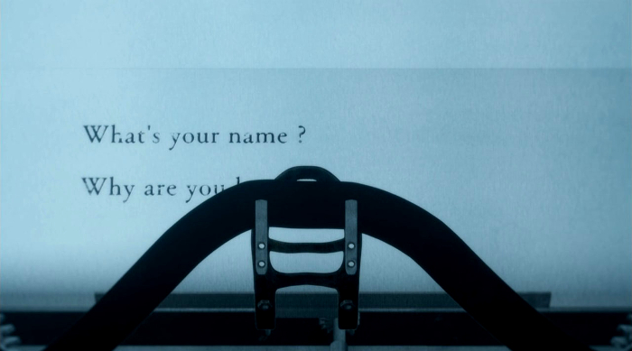

Satsuruki No Tenshi
El videojuego siempre ha mantenido una íntima conexión con la industria de la animación nipona y el manga. Analizándolo desde una óptica empresarial, a pesar de diferenciarse en cuanto a contenido y forma de consumo, estamos ante productos de ocio cuya manufactura busca el objetivo póstumo de ser rentables. Por este mismo motivo no es de extrañar que convivan entre sí, que observemos con relativa frecuencia creaciones que coexisten en diversos formatos y productos transmedia. La lista de videojuegos basados en populares franquicias de animación se antoja tediosa, amén de mayoritariamente conocida. Sin embargo, existe un espacio para el videojuego como punto de inicio, como obra de germinación. Casos de indudable éxito como Steins;Gate o Fate/Stay Night son productos de animación cuya concepción reside ahí, en el videojuego —y, para ser más exactos, en la novela visual—. Makoto Sanada lanzó a finales de 2016 Angels of Death (Satsuriku no Tenshi), un videojuego desarrollado íntegramente en RPG Maker. Una aventura indie de terror que volcaba todo el peso sobre su narrativa. La interacción entre Ray, una joven muchacha con claros síntomas de amnesia que despierta en medio de un hotel temático de lunáticos, y Zack, el misterioso asesino de rostro oculto y guadaña en mano que promete brindarle una bella muerte cuando escapen del lugar, es el punto fuerte de la obra; y esto es algo que se traslada eficazmente a la adaptación animada de J.C. Staff.
Mátame por favor
En cierto modo, el primer capítulo de Angels of Death llevó a mi subconsciente a recordar The Raid, una producción cinematográfica de origen indonesio del 2011. En dicho filme, un enorme edificio totalmente hermético plagado de asesinos y narcotraficantes es el escenario donde un joven agente de policía debe escapar con vida. En ambos títulos el entorno ejerce de protagonista, obstáculo y un enemigo más. La oscuridad, nocividad y presión imperantes en él son el común denominador en ambas producciones. El intento de huida del agente Rama es uno violento, cruento y salvaje, demasiado físico. Sin embargo, el de Ray es uno donde prima el misterio y los tintes psicológicos. La violencia no podría faltar en un recinto habitado por individuos retorcidos y sádicos, pero aquí no es la total protagonista. El de Ray no es un viaje solo de huida, también es uno de descubrimiento.

Los primeros compases de Angels of Death arrojan al espectador a un estado de confusión y desconcierto, exactamente el mismo que experimenta su protagonista. Una joven muchacha de rubio cabello e intensa mirada de tonalidad azul que despierta en una de las plantas de un tétrico edificio. Durante los primeros minutos, el espectador ni siquiera conoce el nombre de la joven y mucho menos qué está haciendo en un lugar tan siniestro. Tiene que ser una arcaica máquina de escribir dispuesta en una diminuta habitación la que —por razones más sobrenaturales que lógicas— comience a mecanografiar las preguntas que cualquiera de nosotros nos haríamos. «¿Cómo te llamas? ¿Por qué estás aquí? ¿Por qué? ¿Por qué estás en el hospital?». Una vez respondida la última cuestión, un sonido recorre el escenario. Una puerta se abre. Un ascensor que funciona. La chica como sacrificio. El viaje ha comenzado.